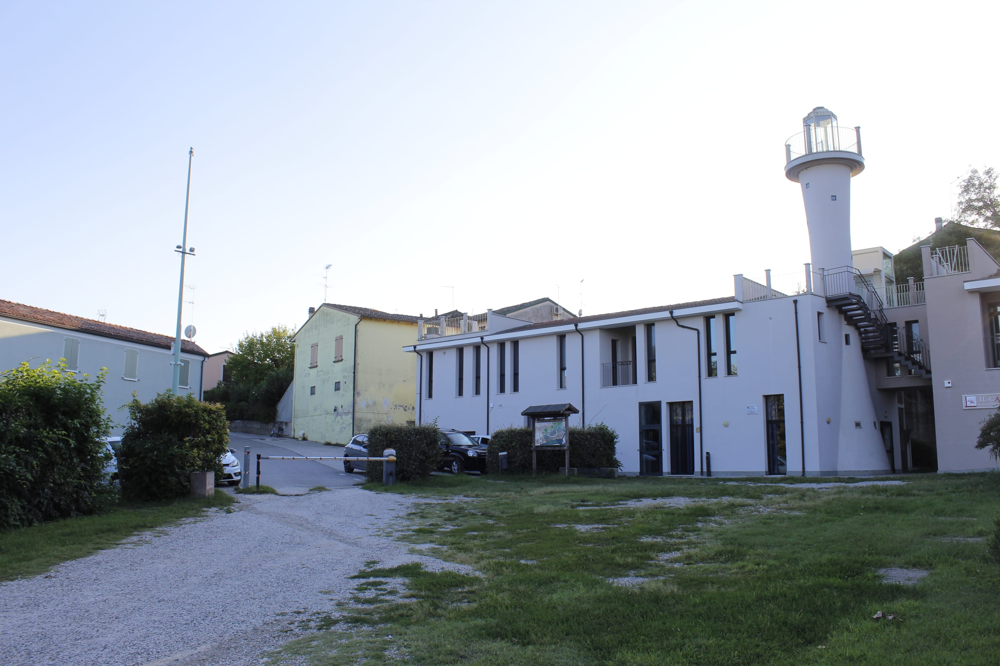
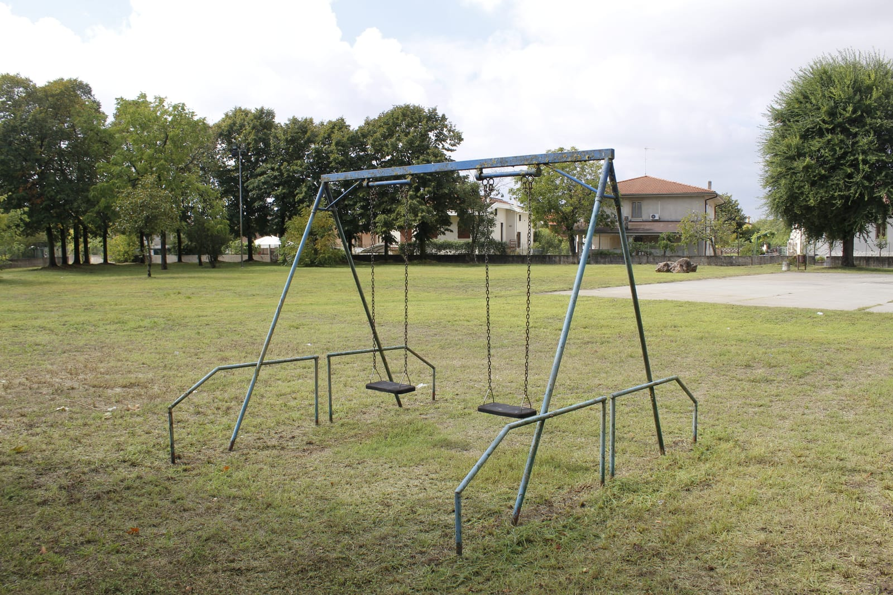
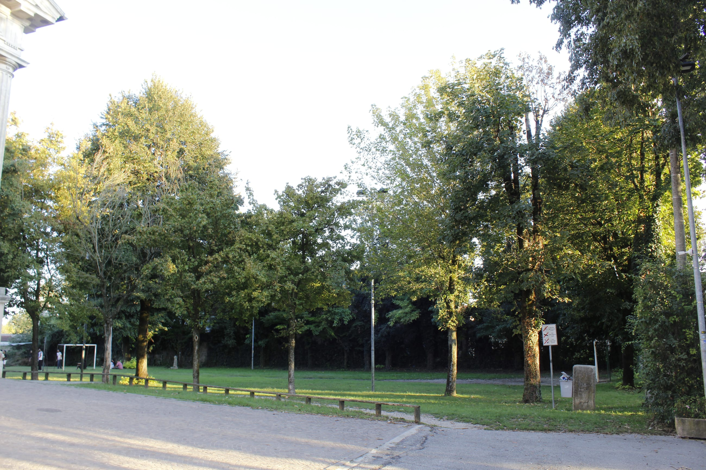
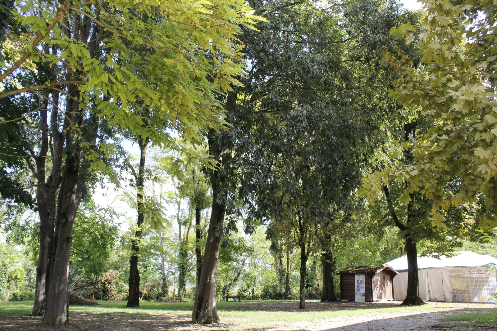
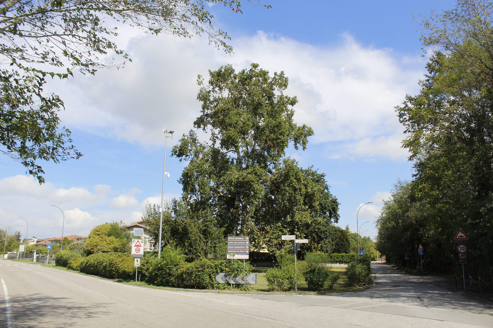
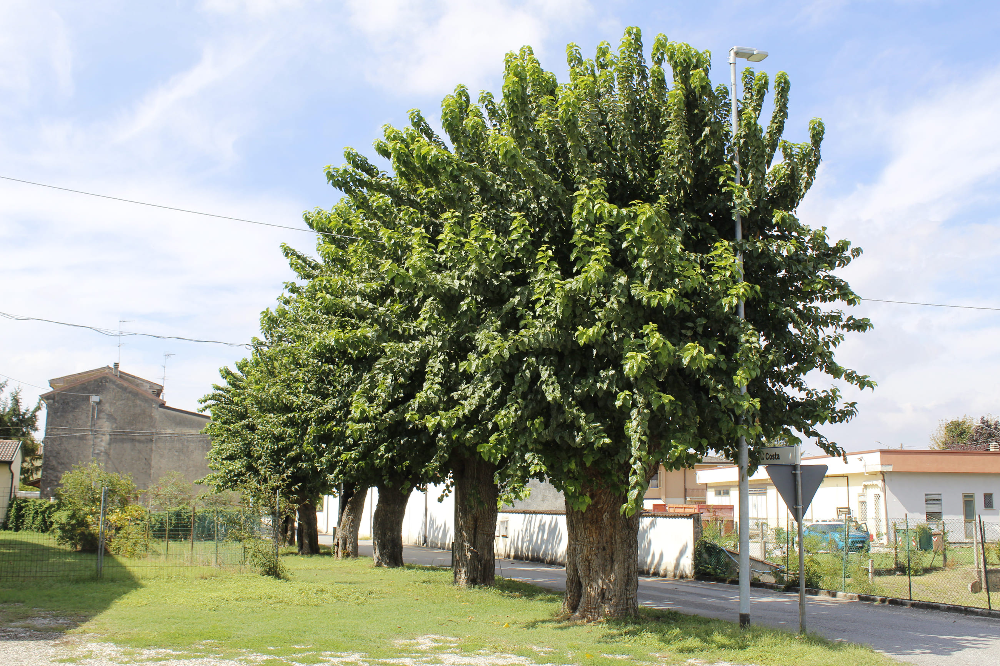
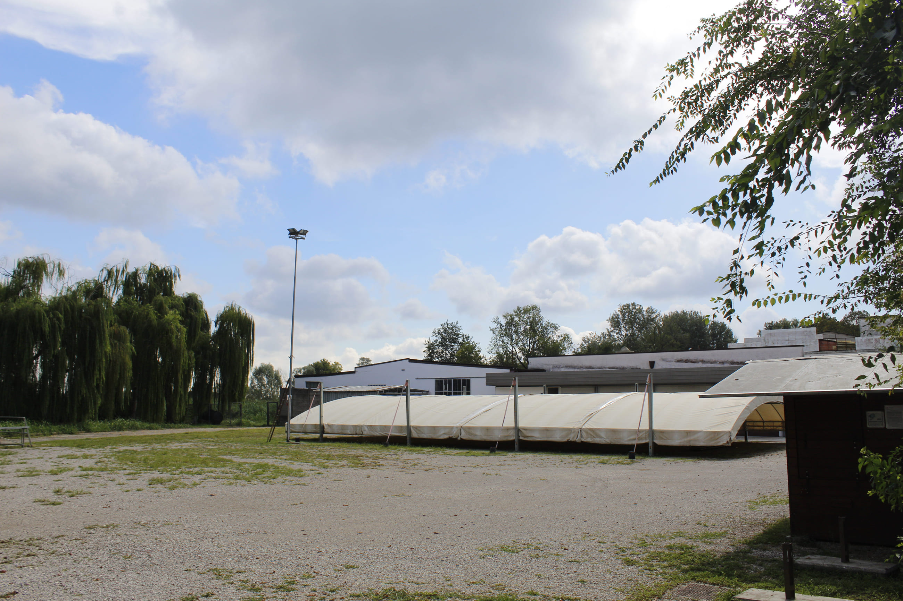
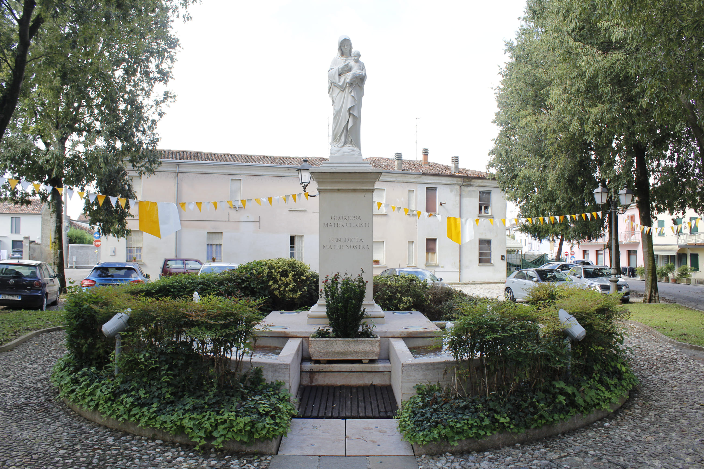
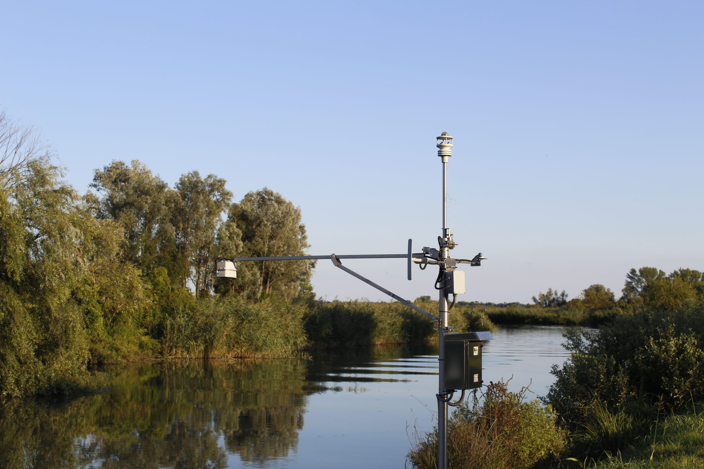
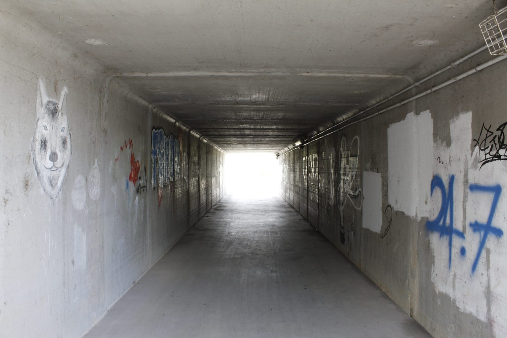

Natura
Rivalta è immersa nel Parco Regionale del Mincio e affacciata sulla Riserva Naturale Valli del Mincio: 127 ettari di zone umide, più della superficie residenziale del paese.
Parchi pubblici
17 parchi mappati, di cui 16 ad accesso pubblico — uno solo è marcato come privato.
Dopo la tromba d'aria di venerdì 28 agosto il Comune di Rodigo ha chiuso il Parco Campino — che indica come parco Saccardi, l'ex Campino di Rivalta — in attesa della messa in sicurezza delle piante danneggiate. Vietato inoltre sostare sotto gli alberi ad alto fusto a fondo Mincio e lungo la ciclabile Soradori (Rodigo–Fossato), in attesa di verifica. Aggiornamenti dal Comune.
| Parco | Ubicazione | Orario |
|---|---|---|
| Parco Pubblico Campino | zona Via Madonnina | — |
| Parco Fabrizio Quattrocchi | Via Renzo Regattieri | 24/7 |
| Parco Villa Arrivabene | Via Giovanni Arrivabene / Via Mazzini | giardino storico di Corte Arrivabene |
| Parco «La Platana» | Piazza Platana | 24/7 — è l'Area Feste Platana, sede delle manifestazioni |
| Area verde di Via Garibaldi | Via Giuseppe Garibaldi — 49 m dal centro | 24/7 |
| Boschetto della Chiesa | dietro Piazza Chiesa — 282 m | bosco, non un parco attrezzato |
| Altre 11 aree verdi di quartiere | Via Tezzone, Piazza Chiesa (2), Via SS. Patroni, Via Regattieri, Via Arrivabene, Via Enzo Ferrari, Strada Camignana (2)… | accesso libero |







Aree gioco per bambini
- Zona Via Madonnina — 2 playground, accesso libero.
- Campino Oratorio — Vicolo Gilberto Pagliari, accesso libero.
Fontanelle e arredo urbano
Fontanelle d'acqua potabile — 5
| Posizione | Note |
|---|---|
| Via Tezzone (cortile scolastico) | riempimento borracce, accessibile — interna al cortile della scuola |
| Vicolo Gilberto Pagliari | rubinetto |
| Via Porto (zona Corte Mincio) | rubinetto — verificata 2021 |
| Via dei Pescatori | accesso libero, gratuita, riempimento borracce |
| Via Francesca (zona est, ~1,2 km) | riempimento borracce |
Fontane ornamentali — 3
Fontana della Madonna in Piazza Chiesa, illuminata; altre due in zona Via Madonnina.

Altro arredo urbano
Le tre meridiane sono in Via Turati, Via Francesca e zona centro. Completano l'arredo: 1 area picnic (Corte Mincio), 2 pensiline fra cui il Lavatoio storico in Via Porto, 1 capanno per birdwatching (Via Porto, 24/7), 1 punto panoramico (Via Porto) e 2 bidoni rifiuti pubblici.
Uso del suolo
La palude, parzialmente bonificata con la costruzione di canali, costituisce un'eccezionale riserva faunistica.

| Uso del suolo | Ettari |
|---|---|
| Zone umide (wetland) | 127,2 |
| Residenziale | 105,3 |
| Filari alberati (incl. «Brolo del Nonno») | 81,0 |
| Seminativo (incl. «Monte Perego») | 71,6 |
| Specchi d'acqua (incl. «Gioco dei Pozzoni / Pusun») | 23,7 |
| Aie e corti agricole (Bolzacchini, Corte Tesorino) | 22,3 |
| Bosco («Boschetto Montagnine» alto e basso, «Ontaneto di Monte Perego») | 14,7 |
| Industriale | 6,5 |
| Bosco naturale («Boschetto della Chiesa») | 5,5 |
| Commerciale | 3,8 |
| Vivaio | 1,4 |
| Cimitero | 0,7 |
La fioritura del fior di loto
Sul Lago Superiore, in estate, è lo spettacolo naturalistico principale della zona. Il Parco del Mincio ne contiene lo sviluppo per tutelare gli habitat delle Valli.
Avifauna
Aironi rossi e cinerini, svassi, il raro tarabuso, il falco di palude.
La stazione meteo, adesso
A Rivalta è attiva una stazione gestita in collaborazione con il Centro Meteorologico Lombardo. Non è una previsione: sono le misure di un sensore che sta in paese, a 45,173 N — 10,677 E. La stazione le pubblica ogni venticinque secondi circa su meteomincio.it, e questa pagina le rilegge da sola una volta al minuto finché resta aperta.
Lettura in corso. Dati della stazione di Rivalta, per gentile concessione di meteomincio.it.
Corsi d'acqua
| Corso d'acqua | Tipo | Lunghezza mappata |
|---|---|---|
| Mincio | fiume — navigabile | 12.860 m |
| Seriola Marchionale | canale | 4.019 m |
| Fossa lunga | scolo | 2.711 + 162 m |
| Duganella | fosso | 648 m |
| Fosso Scudler | scolo | 620 m |
| Fossa della turbina | scolo | 562 m |
| Fossa di confine Tesorino | scolo | 550 m |
| Fosso Bernardi | fosso | 547 m |
| Fosso davanti al porto | scolo | 376 m |
| Fossa d'in mes | scolo | 353 m |
| Fossa del gioco | corso d'acqua | 133 m |
| Rete di scoli minori | scoli | ~26,9 km |
| Rete di canali irrigui | canali | ~4,1 km |
3 impianti di depurazione mappati nell'area.
Ciclabili e sentieri
| Percorso | Tipo | Lunghezza mappata |
|---|---|---|
| Ciclabile Rivalta sul Mincio – Grazie | asfalto, illuminata | 1.009 m nel riquadro — rete lcn n.1 |
| Ciclopedonale Rivalta sul Mincio – Rodigo | ghiaino fine, non illuminata | tratto oltre 2 km dal centro |
| Ciclovia Destra Mincio | itinerario di lunga percorrenza — rete lcn MN1d | attraversa il territorio |
| Il Parco Oglio Sud | itinerario cicloturistico — rete lcn OP06 | attraversa il territorio |
| Sottopasso ciclabile | cemento, illuminato | 73 m |
| Ciclabili minori | asfalto / cemento | 2.029 m |
Strade bianche e capezzagne (track) | ghiaia, erba, sterrato, compattato — grade 1–5 | ~17,0 km |
Sentieri (path) | erba, terra, sterrato, legno, ghiaia | 1.268 m |
| Marciapiedi e percorsi pedonali | masselli, cemento, legno | ~700 m |
I 17 km di track sono la vera rete escursionistica di Rivalta: sterrati agricoli e arginali che collegano il paese alle Valli. Non sono segnalati come sentieri escursionistici ufficiali, ma sono percorribili a piedi e in mountain bike.
